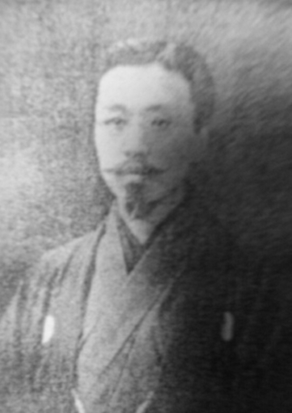
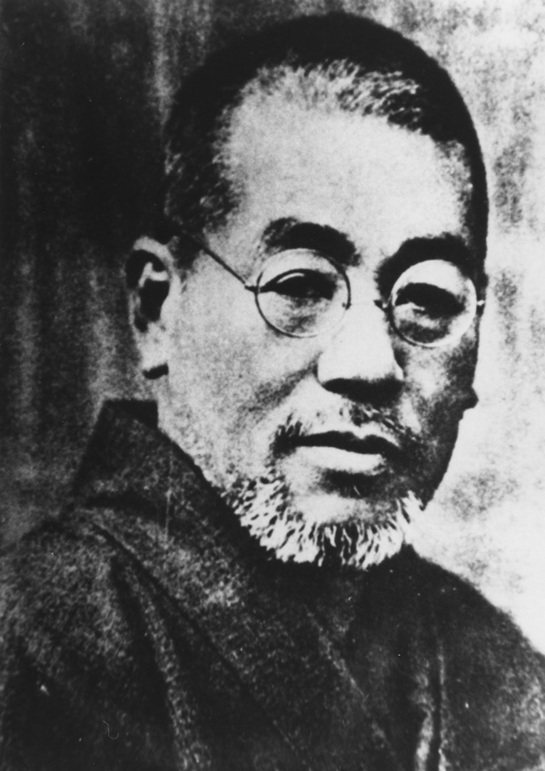
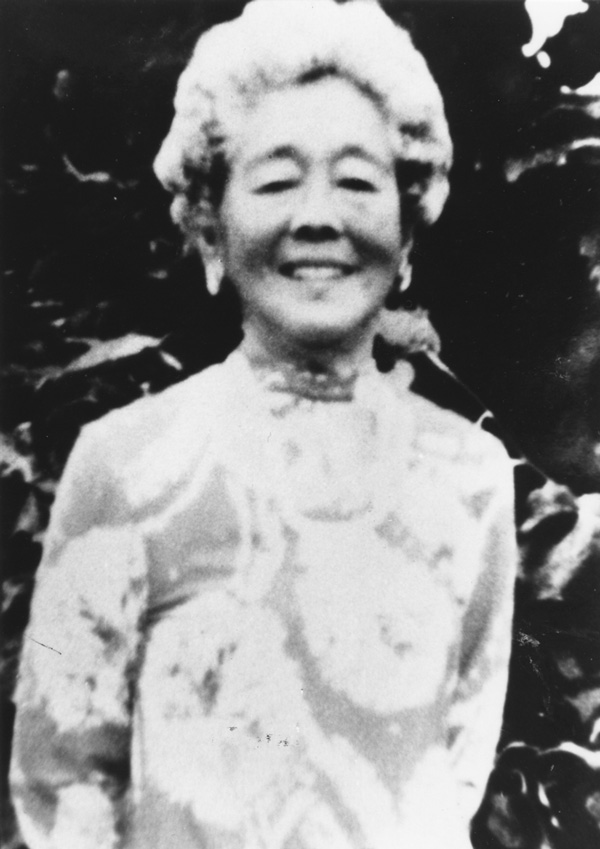

Reiki is spiritually guided life force energy. Everything is made of energy; animals, people, and emotions. As a Reiki practitioner, I act as an open channel through which healing energy flows from the Universal Source; God, Spirit, or however you connect.
Like a strong and clear phone signal, distance doesn’t matter. Whether we are in the same room or across the country, Reiki flows where it’s needed.
 Reiki is a spiritual practice that is rooted in compassion, peace and an alignment with natural energy. The endeavor of Reiki practitioners is to improve health and quality of life through Reiki energy to restore balance. Several older forms of Reiki had been used for hundreds of years. In 1914, the Japanese therapist Matiji Kawakami‘s developed a system called “Reiki Ryoho” as a healing method.
 The form of Reiki many people practice today was created by Japanese Buddhist Mikao Usui in Japan in the early 1920s. Usui had a spiritual awakening on Mount Kurama in 1922 in which he experienced a powerful flow of universal life energy that both enlightened and healed him. Shortly after this enlightenment, he founded the Usui Reiki Ryoho Gekkai in Tokyo. Here he taught and practiced what he called “The Usui Reiki Treatment Method for Improvement of Body and Mind”. His teachings focused on healing through spiritual balance, he taught the five Reiki precepts and continual self-improvement. Usui trained over 2,000 students and teachers before he passed in 1926.
After Usui’s passing, his student Chujiro Hayashi, a formal naval doctor, refined and systematized the practice of Reiki. He created new methods for hand positions and group healing sessions and he founded his own Hayashi Reiki Institute in Tokyo. His more structured approach helped Reiki to become more accessible and medical in its nature. He would go on to train Hawayo Takata in his methods and she would later introduce Reiki to the West.
Hawayo Takata was a first generation Japanese American, born in Hawaii. She began to study under Hayashi after recovering from an illness under his care. In 1938, she became a Reiki Master and returned to Hawaii, where she opened several clinics and began teaching. To make Reiki more approachable for her Western students, she simplified the system and introduced standardized hand positions and distinct attunement methods for each level. Through her teaching, Reiki spread widely across the United States and beyond, ensuring that Usui’s legacy of universal healing energy would reach a global audience.
Animal Reiki treatments can have many benefits on both animals and their companions:
Reiki is a free complementary service to shelters and veterinary care at request.